스포츠경영관리사 (2021-09-12 기출문제)
1과목: 스포츠 산업론
1. 스포츠산업 진흥법에 대한 설명으로 틀린 것은?
- 국가 및 지방자치단체는 스포츠산업의 진흥을 위하여 필요한 시책을 수립ㆍ시행하여야 한다.
- 지방자치단체는 문화체육관광부장관의 인가를 받아 업종별로 사업자단체를 설립할 수 있다.
- 문화체육관광부장관은 스포츠산업의 육성과 기술개발을 위하여 스포츠산업 관련 상품의 품질 향상에 필요한 지원을 할 수 있다.
- 문화체육관광부장관은 선수의 권익을 보호하고, 스포츠산업의 건전한 발전을 위하여 공정한 영업질서의 조성 등 필요한 시책을 강구하여야 한다.
(정답률: 71%)

2. 스포츠 브랜드가치를 형성하는 요인에 대한 설명으로 틀린 것은?
- 팀 성적 및 선수 등의 팀 관련요인은 프로구단의 브랜드가치 형성에 영향을 미친다.
- 프로구단의 연고도시 및 팬 지지도는 프로구단의 브랜드가치 형성에 영향을 미친다.
- 리그의 수준은 구단 및 이벤트의 브랜드가치에 영향을 미치지 않는다.
- 스포츠이벤트가 열리는 시설은 브랜드가치에 영향을 미친다.
(정답률: 85%)
3. 스포츠가 서비스로서 갖는 특성이 아닌 것은?
- 무형성
- 소멸성
- 분리성
- 동시성
(정답률: 60%)
4. 스포츠산업 진흥법령상 스포츠산업 전문인력 양성기관에 보조할 수 있는 경비가 아닌 것은?
- 전문인력 양성교육 프로그램 운영에 필요한 비용
- 전문인력 양성교육에 대한 조사ㆍ연구 비용
- 교육자료의 개발 및 보급에 필요한 비용
- 교육장소 부지 매입 및 교육장비 구입비용
(정답률: 86%)
5. 스포츠이벤트 생산자가 티켓 유통대행사를 선정할 때 유의할 사항을 모두 고른 것은?
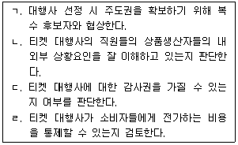
- ㄱ, ㄷ
- ㄱ, ㄴ, ㄹ
- ㄴ, ㄷ, ㄹ
- ㄱ, ㄴ, ㄷ, ㄹ
(정답률: 74%)
6. 구매 후 부조화를 발생시키는 상황과 가장 거리가 먼 것은?
- 구매결정을 취소할 수 없을 때
- 선택하지 않은 대안이 단종 되었을 때
- 선택하고 싶은 대안들이 여러 개 있을 때
- 구매자가 심리적 중요성을 갖고 그 결정에 개입했을 때
(정답률: 74%)
7. 스포츠산업의 핵심제품인 스포츠이벤트의 브랜드가치에 관한 설명으로 틀린 것은?
- 스포츠이벤트의 방송중계권 가격 차이는 이벤트의 브랜드 가치 차이에서 온다고 볼 수 있다.
- 스포츠이벤트의 브랜드가치를 형성하는 요인으로는 조직, 팀, 시장관련요인을 들 수 있다.
- 스포츠이벤트에서 파생되는 동일한 유형의 사업권이라도 이름이 잘 알려진 이벤트와 덜 알려진 이벤트의 권리 구매가격에 차이가 있는 것도 브랜드가치 때문이다.
- 스포츠이벤트에 참가하는 선수나 감독, 리그의 전통 등은 브랜드가치 형성에 영향을 미치지 않는다.
(정답률: 84%)
8. Kotler가 제시한 5가지 제품 차원과 스포츠 제품의 예가 바르게 짝지어진 것은?
- 기대제품(expected product) - 쾌적한 관람시설
- 확장제품(augmented product) - 스포츠용품 판매
- 잠재제품(potential product) - 편리한 주차 시설
- 기본제품(basic product) - 경기 관람을 통한 대리경험
(정답률: 49%)
9. 다음 중 스포츠산업의 발전을 위협하는 외부요인에 해당되는 것은?
- 프로축구의 선수 부족
- 온라인 게임 시장의 폭발적 인기
- 헬스클럽의 우수한 프로그램 부족
- 라이벌 프로야구팀의 FA선수 전원 흡수
(정답률: 75%)
10. 스포츠산업의 특성과 가장 거리가 먼 것은?
- 단일 생산단위에 따라 특정산업 분류에 포함되는 산업이다.
- 공간과 입지조건이 선행되어야 하는 산업이다.
- 시간소비형 산업이다.
- 건강산업의 속성과 동시에 오락산업의 속성을 가진 산업이다.
(정답률: 68%)
11. 스포츠산업 진흥법령상 ( )안에 들어갈 숫자가 옳은 것은?
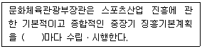
- 1년
- 3년
- 5년
- 10년
(정답률: 82%)
12. 세계 각국의 정부 및 지방자치단체가 스포츠이벤트 유치를 위해 시설 등에 투자하여 얻고자 하는 혜택과 가장 거리가 먼 것은?
- 해당 지역경제 활성화
- 해당 지역주민의 심리적 소득
- 도시 이미지 강화
- 기업 인지도 제고
(정답률: 59%)
13. 스포츠소비자의 구매경험과 관여도에 따른 구매의사결정에 대한 다음 표에 알맞은 내용이 아닌 것은?
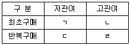
- ㄱ: 다양성 추구
- ㄴ: 복잡한 의사결정
- ㄷ: 충동적 구매
- ㄹ: 비교적 단순한 의사결정
(정답률: 55%)
14. 소비자 충성도에서 심리적 애착이 강하지만 여러 제약요인들로 참가가 낮은 상태를 의미하는 것은?
- 무 충성도(no loyalty)
- 잠재적 충성도(latent loyalty)
- 진정한 충성도(true loyalty)
- 거짓 충성도(spurious loyalty)
(정답률: 73%)
15. 한국표준산업분류(제10차)에서 ‘스포츠서비스업(911)’에 해당하지 않는 것은?
- 경기장 운영업
- 체력단련시설 운영업
- 골프연습장 운영업
- 유원지 및 테마파크 운영업
(정답률: 69%)
16. 스포츠 라이센스 상품 생산업체가 월드컵 공식공급업체 자격을 취득한 후 추진할 일련의 과정을 바르게 나열한 것은?
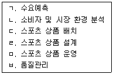
- ㄱ→ㄴ→ㄷ→ㄹ→ㅁ→ㅂ
- ㄱ→ㄴ→ㄹ→ㄷ→ㅁ→ㅂ
- ㄴ→ㄱ→ㄹ→ㄷ→ㅁ→ㅂ
- ㄴ→ㄱ→ㄷ→ㄹ→ㅁ→ㅂ
(정답률: 76%)
17. 우리나라 스포츠산업 정책의 변천에 관한 설명으로 틀린 것은?
- 1990년 전까지는 스포츠산업체가 대부분 소규모 영세업체로 운영되었기에 정부로 부터 정책적 지원 대상에서 제외되었다.
- 「체육시설의 설치ㆍ이용에 관한 법률」제정으로 민간 체육시설업의 효율적인 관리와 체계적인 육성을 할 수 있는 기반이 마련되었다.
- 제1차 국민체육진흥5개년계획은 ‘스포츠산업’이라는 용어가 처음 사용됨으로써 스포츠를 산업적 시각에서 다루었다.
- 2000년대 스포츠산업 정책은 스포츠산업 육성대책(2001), 스포츠산업 비전 2010(20⑤), 2009~2013 스포츠산업 중장기계획(2008)이 있다.
(정답률: 51%)
18. 스포츠산업 진흥법령상 공유재산에 관한 설명으로 틀린 것은?
- 지방자치단체의 장은 프로스포츠단과 협의한 경우에는 사용ㆍ수익 허가 기간 동안의 사용료 전부를 한꺼번에 징수할 수 있다.
- 연간 사용료는 시가(時價)를 반영한 해당 재산 평가액의 연 1만분의 20 이상의 범위에서 문화체육관광부장관이 정한다.
- 연간 사용료가 100만원을 초과하는 경우에는 연 4회의 범위에서 분할납부하게 할 수 있다.
- 프로스포츠단이 해당 체육시설을 직접 수리하는 경우 사용료를 감경ㆍ면제할 수 있다.
(정답률: 38%)
19. 스포츠용품 유통 경로 중 프랜차이징 시스템을 이용하는 프랜차이즈 가맹점에 대한 설명으로 틀린 것은?
- 가맹점은 다른 가맹점을 통제할 수 있다.
- 가맹점 운영과 관련하여 본부의 통제를 받아야 한다.
- 가맹점은 프랜차이즈 본부의 유명세로 광고ㆍ마케팅 비용을 절감할 수 있다.
- 가맹점은 특정 지역 내에서는 독접영업권이 부여되는 이점이 있다.
(정답률: 83%)
20. 스포츠상품 중 참여스포츠 제품에 포함되지 않는 것은?
- 발리 휘트니스센터 이용권
- 동아마라톤 출전권
- KPGA티칭프로 레슨프로그램
- FC서울 프로축구단 경기 입장권
(정답률: 75%)
21. 스포츠산업 진흥법령상 문화체육관광부장관이 스포츠산업지원센터로 지정할 수 있는 기관을 모두 고른 것은?
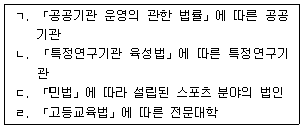
- ㄱ, ㄴ
- ㄱ, ㄷ, ㄹ
- ㄴ, ㄷ, ㄹ
- ㄱ, ㄴ, ㄷ, ㄹ
(정답률: 46%)
22. 스포츠조직의 프로퍼티를 활용하여 만든 확장제품과 가장 거리가 먼 것은?
- 스폰서십
- 중계권
- 라이센싱
- 경기관람권
(정답률: 59%)
23. 소비자로서 스포츠시장에 참여할 수 있는 방법과 가장 거리가 먼 것은?
- 직접 스포츠에 참여하는 방법
- 경기장에 가서 스포츠를 관람하는 방법
- 스포츠 이벤트를 텔레비전이나 라디오 등의 매체를 통해 접하는 방법
- 스포츠용품회사를 직접 설립하는 방법
(정답률: 68%)
24. 스포츠소비자의 요구를 기술적 특성과 연결시켜 스포츠제품에 반영하는 기법은?
- 품질기능전개(QFD)
- 동시공학(CE)
- 가치분석(VA)
- 가치공학(VE)
(정답률: 58%)
25. 스포츠소비자와 구입하는 상품이 바르게 연결된 것은?
- 팬 – 로고 및 캐릭터 사용권
- 기업 – 경기 명칭 사용권
- 경기연맹 – 경기(입장권)
- TV방송국 – 스폰서십
(정답률: 60%)
2과목: 스포츠 경영론
26. 다음은 어떤 비즈니스 전략에 관한 설명인가?
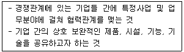
- 전략적 제휴
- 아웃소싱
- 기업계열화
- 기업전문화
(정답률: 64%)
27. A스포츠 구단의 유동자산은 300억원, 유동부채 200억원, 자본 500억원일 때, 이 구단의 유동비율은?
- 100%
- 150%
- 200%
- 250%
(정답률: 46%)
28. 투자안 분석기법 중 순현가(NPV)법에 관한 설명으로 옳은 것은?
- 순현가는 투자의 결과 발생하는 현금유입의 현재가치에서 현금유입의 미래가치를 차감한 것이다.
- 순현가법에서는 수익과 비용에 의하여 계산한 회계적 이익을 사용한다.
- 순현가법에서는 투자안의 내용연수 동안 발생할 미래의 모든 현금흐름을 반영한다.
- 순현가법에서는 현금흐름을 최대한 큰 할인율로 할인한다.
(정답률: 45%)
29. 복수의 평가자가 적성검사, 심층면접, 시뮬레이션, 사례연구, 역할연기 등의 평가방법을 활용하여 지원자의 행동을 관찰 후 평가ㆍ선발하는 방법은?
- 다면평가법
- 행동평가법
- 종합평가제도
- 패널면접법
(정답률: 53%)
30. 스포츠 조직의 외부 자본 조달 방법 중 성격이 다른 것은?
- 주식발행
- 채권발행
- 스폰서십
- 은행차입
(정답률: 55%)
31. 스포츠조직이 외부의 위협요인과 내부의 약점을 최소화하기 위해 SWOT분석을 통해 도출하는 전략은?
- SO 전략
- WO 전략
- ST 전략
- WT 전략
(정답률: 51%)
32. 미국 프로농구에서 각 팀들이 자기 팀의 베테랑 선수들과 재계약할 경우, 샐러리캡을 초과할 수 있도록 한 조치는?
- Larry Bird exception
- Farm system
- Free agent
- Draft system
(정답률: 51%)
33. 카츠(R.L.Katz)가 제시한 경영자에게 필수적인 자질에 해당하지 않는 것은?
- 기술적 자질(technical skill)
- 인간관계적 자질(human skill)
- 업무적 자질(operational skill)
- 개념적 자질(conceptual skill)
(정답률: 36%)
34. 재무정보의 질적 특성이 아닌 것은?
- 비교가능성
- 발생주의
- 적시성
- 이해가능성
(정답률: 40%)
35. 앤소프(Ansoff)의 성장전략 중 신제품을 가지고 신시장에 진출하는 전략은?
- 시장개발전략
- 시장침투전략
- 제품개발전략
- 다각화전략
(정답률: 42%)
36. BCG 매트릭스에서 시간 흐름에 따른 사업단위의 수명주기를 옳게 나열한 것은?
- 별→현금젖소→개→물음표
- 물음표→별→현금젖소→개
- 현금젖소→개→별→물음표
- 개→물음표→현금젖소→별
(정답률: 34%)
37. 스포츠 경영관리 과정에 해당되지 않는 것은?
- 계획
- 조직화
- 자본
- 지휘
(정답률: 55%)
38. 다음은 어떤 스포츠 에이전시의 유형에 관한 설명인가?
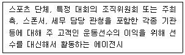
- 선수관리 에이전시
- 광고 스포츠 에이전시
- 국제 스포츠 마케팅 에이전시
- 라이센싱과 머천다이징 전문 에이전시
(정답률: 66%)
39. 동기부여의 내용이론에 해당하지 않는 것은?
- 2요인 이론
- ERG 이론
- 욕구단계 이론
- 공정성 이론
(정답률: 49%)
40. 포터(M. Porter)의 가치사슬모델에서 본원적 활동에 해당하지 않는 것은?
- 운영활동
- 물류투입활동
- 고객서비스 활동
- 인적자원관리 활동
(정답률: 35%)
41. 스포츠센터를 중력모델법을 이용하여 평가했을 때, 매력도가 가장 높은 것은?
- A스포츠센터 : 200평의 규모, 20분 거리
- B스포츠센터 : 180평의 규모, 15분 거리
- C스포츠센터 : 300평의 규모, 30분 거리
- D스포츠센터 : 250평의 규모, 25분 거리
(정답률: 57%)
42. 총자산회전율의 산식으로 옳은 것은?
- 총자산/매출액
- 매출액/총자산
- 순이익/자기자본
- 자기자본/순이익
(정답률: 55%)
43. 우리나라의 스포츠경영 환경변화로 옳은 것은?
- 프로스포츠의 퇴보
- 고령화 속도의 완화
- 전문체육 위주의 체육정책
- 생활체육 참가율의 증대
(정답률: 65%)
44. 동기부여 관점에서 매슬로우의 욕구 단계 이론에 대한 설명으로 틀린 것은?
- 동기부여 이론 중 내용이론에 해당된다.
- 각 욕구는 피라미드 형태로 구성된다.
- 피라미드 형태의 하위 욕구와 상관없이 상위 계층의 욕구를 충족할 수 있다.
- 최상위의 욕구는 자아실현의 욕구이다.
(정답률: 65%)
45. 스포츠이벤트 기획 후 실행단계에서 이벤트 연출 시 고려사항을 모두 고른 것은?
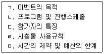
- ㄱ, ㄴ, ㅁ
- ㄴ, ㄷ, ㄹ
- ㄱ, ㄷ, ㄹ, ㅁ
- ㄱ, ㄴ, ㄷ, ㄹ, ㅁ
(정답률: 63%)
46. 생산, 판매, 회계, 인사, 총무 등의 부서를 만들고 관련 과업을 할당하는 조직구조는?
- 사업부 조직
- 매트릭스 조직
- 기능별 조직
- 네트워크 조직
(정답률: 40%)
47. 사업단위들을 독립기업으로 운영하는 것보다는 다각화된 사업들을 통합ㆍ운영하여 시너지 효과를 얻을 수 있는 것을 전제로 하는 전략은?
- 기업전략
- 사업부전략
- 기능별 전략
- 영업전략
(정답률: 28%)
48. 조직에서 시간이 지남에 따라 업무량과 무관하게 구성원 수가 증가하는 경향을 나타내는 법칙은?
- 파킨슨 법칙(Parkinson’s law)
- 파레토 법칙(Pareto law)
- 세이 법칙(Say’s law)
- 하인리히 법칙(Heinrich’s law)
(정답률: 49%)
49. 스포츠이벤트를 기획함에 있어 고정비 6억원, 1단위당 변동비 20000원, 1인당 입장료를 50000원으로 책정했을 때 손익분기점에 이르려면 몇 명의 관객이 입장해야 하는가?
- 10000명
- 20000명
- 30000명
- 40000명
(정답률: 48%)
50. 스포츠 시설의 매력성 관리에 대한 설명과 가장 거리가 먼 것은?
- 스포츠 시설은 이용하는 데 불편함이 없도록 관리되어야 한다.
- 스포츠 시설은 적정 수준 이상의 많은 사람이 이용하도록 관리해야 한다.
- 스포츠 시설은 보기 좋고 아름답게 관리되어야 한다.
- 스포츠 시설은 접근이 용이하도록 관리되어야 한다.
(정답률: 69%)
3과목: 스포츠 마케팅론
51. 입장권의 가격을 3000원에서 2000원으로 인하할 경우 관람자 수가 3000명에서 4000명으로 증가한다면 수요의 가격탄력성은?
- 0
- 1
- 0.66
- 0.50
(정답률: 37%)
52. 스폰서가 커뮤니케이션 효과를 높이기 위해 적용하는 원칙에 대한 설명으로 틀린 것은?
- 독점성의 원칙: 스포츠단체가 공식스폰서를 제외하고 다른 어떤 기업도 스포츠단체의 보유자산을 활용할 수 없도록 제한하는 것이다.
- 통일성의 원칙: 기업이미지 통합차원에서 브랜드와 로고, 슬로건 등을 통합하여 대중들에게 강한 인상을 주도록 하는 것이다.
- 전문성의 원칙: 스폰서십 업무를 정확하게 수행하기 위해 전문가가 업무를 담당해야 한다는 원칙이다.
- 보완성의 원칙: 정기적인 스포츠이벤트인 경우 최소 3년 이상 지속적인 참여를 해야 효과를 얻을 수 있다는 것이다.
(정답률: 58%)
53. 마케팅 조사유형 중 탐색조사에 해당하지 않는 것은?
- 관찰법
- 문헌조사
- 패널조사
- 사례조사
(정답률: 31%)
54. 다음에서 설명하는 것은?
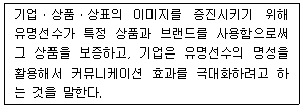
- 라이센싱
- 프로모션
- 인도스먼트
- 머천다이징
(정답률: 50%)
55. Gray(1996)의 스폰서십의 6P’s가 아닌 것은?
- 공동협력
- 대중
- 플랫폼
- 선호
(정답률: 38%)
56. 스포츠마케팅 조사연구단계에 관한 설명으로 가장 적합한 것은?
- 예비조사단계 – 문제인식, 상황분석, 조사계획 평가
- 조사계획단계 – 조사범위 및 내용의 구체화, 조사대상 결정, 조사방법 및 시기결정, 조사계획 평가
- 본 조사 및 분석 단계 – 조사실시, 자료분석, 대안제시, 보고서 작성, 조사계획 평가, 선택된 대안 실행
- 피드백 단계 – 피드백, 선택된 대안 실행, 재계획 수립
(정답률: 32%)
57. A스포츠 회사의 마케팅담당자는 최근 개발한 신제품 매출의 극대화를 위해 고객지향적 판매가격을 책정하려고 한다. 이때 가장 적합한 마케팅조사방법은?
- 대체상품의 시장가격에 대한 조사
- 제품의 원재료 가격에 대한 조사
- 경쟁제품의 시장가격에 대한 조사
- 판매가격대별 시장수요 예측에 관한 조사
(정답률: 33%)
58. 설문지 질문문항을 배치할 때 고려해야 할 사항과 가장 거리가 먼 것은?
- 단순하고 흥미로운 질문부터 시작하는 것이 좋다.
- 논리적이고 자연스런 흐름에 따라 질문을 위치시킨다.
- 고정반응(response set)을 막도록 질문들을 변화 있게 배치한다.
- 설문지가 매우 긴 경우 중요한 부분은 뒷부분에 위치시킨다.
(정답률: 60%)
59. 스포츠단체, 미디어, 광고주의 관계에 대한 설명으로 틀린 것은?
- 미디어는 스포츠단체에게 중계권료를 지불한다.
- 스포츠단체는 미디어에게 광고비를 지불한다.
- 광고주는 미디어로부터 광고효과를 기대한다.
- 스폰서로서의 광고주는 스포츠단체로부터 촉진효과를 기대한다.
(정답률: 56%)
60. 스포츠단체가 라이센싱 프로그램을 통해서 기대할 수 있는 효과와 가장 거리가 먼 것은?
- 방송 중계시간의 확대
- 라이센싱 수수료 수입의 증대
- 새로운 제품영역 확장 및 관련 상품판매 증진을 통한 부가가치 창출
- 기업과의 우호적 관계 형성을 통한 스포츠 이벤트에 대한 관심 유도
(정답률: 55%)
61. 제품수명주기에서 성장기의 특성에 관한 설명으로 옳지 않은 것은?
- 수요가 급증하기 시작한다.
- 새로운 경쟁자들이 증가한다.
- 유통경로가 확대되고 시장규모가 커진다.
- 제품인지도를 높여 새로운 구매수요를 발굴한다.
(정답률: 48%)
62. 마케팅믹스의 4P’s에 해당하지 않는 것은?
- Price
- Procedure
- Place
- Promotion
(정답률: 55%)
63. 프로스포츠 생산의 기본요소 중 가장 중심이 되는 요인은?
- 경기
- 연맹 행정
- 기업 후원
- 자원봉사자
(정답률: 65%)
64. 올림픽과 TV방송에 관한 설명으로 틀린 것은?
- 1936년 베를린 올림픽에서 처음으로 TV 야외중계방송을 시도하였다.
- IOC는 1960년 로마 올림픽에서 처음으로 TV 방송중계권을 판매하였다.
- 1972년 뮌헨 올림픽에서 처음으로 컬러로 방송되었다.
- 1984년 LA 올림픽에서 방송중계권 프로그램은 LA 올림픽을 흑자 올림픽으로 이끄는데 이겨했으며, TOP프로그램의 핵심적인 부분을 차지했다.
(정답률: 53%)
65. 상표 등록된 재산권을 가지고 있는 개인 또는 단체가 타인에게 대가를 받고 그 재산권을 사용할 수 있도록 상업적 권리를 부여하는 계약을 뜻하는 용어는?
- 스폰서십
- 공식후원
- 상표특허
- 라이센싱
(정답률: 53%)
66. 마케팅믹스 전략에 관한 설명으로 가장 적합한 것은?
- 스포츠소비자는 제품의 가격을 생각할 때 제품에 대한 촉진이나 장소 요인을 고려하지 않는다.
- 모든 마케팅믹스 요인들은 스포츠소비자의 구매행동에 영향을 미친다.
- 제품의 특성에 따라 적합한 촉진매체가 결정되나 촉진 믹스는 제품 위치를 결정하지 못한다.
- 매체보도로부터 얻은 제품의 신뢰성은 다른 촉진 믹스전략을 통해 쉽게 획득할 수 있다.
(정답률: 53%)
67. 브랜드에 대한 설명으로 틀린 것은?
- 자산으로서의 가치를 가질 수 있다.
- 소비자의 충성도를 높이는 중요한 요소이다.
- 기업이 실행하는 유통, 촉진 등 마케팅활동의 대상이 된다.
- 소비자가 구매의 대상이 되는 상품들을 평가하는 사고비용(thinking cost)을 증가시킨다.
(정답률: 59%)
68. 실험설계방법 중 유사실험설계의 대표적인 방법에 해당하는 것은?
- 단일집단 사후실험설계
- 2집단 사전사후실험설계
- 집단비교설계
- 통제집단 사전사후실험설계
(정답률: 22%)
69. 기업의 입장에서 스포츠 브랜드를 확장할 때 얻을 수 있는 이익과 가장 거리가 먼 것은?
- 모 브랜드 시장의 잠식
- 신제품 수용의 촉진
- 모 브랜드와 기업에 긍정적인 피드백 제공
- 모 브랜드의 이미지 제고
(정답률: 57%)
70. 스포츠 스폰서십의 효과측정 유형과 가장 거리가 먼 것은?
- 스포츠 경기 성적 측정
- 매체노출량 측정
- 소비자 태도변화 측정
- 스폰서십에 따른 매출액 변화 측정
(정답률: 53%)
71. 시장세분화를 위한 기준변수 중 구매행동기준에 해당하지 않는 것은?
- 교육수준
- 상표충성도
- 고객생애가치
- 고객반응단계
(정답률: 53%)
72. 시장 세분화의 성공 조건이 아닌 것은?
- 접근성(accessibility)
- 시장규모의 실재성(substantiality)
- 무형성(intangibility)
- 차별성(differentiability)
(정답률: 54%)
73. 제품 개발시 기존의 브랜드자산이 크다고 판단되는 경우, 기존 제품범주에 속하는 신제품에 그 브랜드명을 그대로 사용하는 전략은?
- 라인확장(line extension)
- 복수상표(multi-brand)
- 상향확장(upward stretch)
- 채널확장(channel extension)
(정답률: 50%)
74. PR의 기본적 방법과 가장 거리가 먼 것은?
- 신문발표
- 기자회견
- 무료여행상품
- 리셉션
(정답률: 62%)
75. 경쟁제품과의 차별성을 목표고객에게 인식시키기 위한 마케팅 전략은?
- 유지전략
- 포지셔닝전략
- 성장전략
- 철수전략
(정답률: 65%)
4과목: 스포츠 시설론
76. 스포츠시설 가격정책 중 초기에 매우 낮은 가격을 책정하고 시간이 흐름에 따라 점차 가격을 높여 단기적 이익을 희생하여도 장기적으로는 이를 상쇄하고도 남을 정도의 이익을 얻기 위해 사용하는 것은?
- 침투가격정책
- 고소득 흡수가격정책
- 원가기준가격정책
- 지각된 가치기준 가격정책
(정답률: 43%)
77. 체육시설의 설치ㆍ이용에 관한 법령상 보험가입을 해야 하는 체육시설업자는? (단, 소규모임을 전제로 함)
- 체육도장업
- 무도장업
- 골프 연습장업
- 가상체험 체육시설업
(정답률: 34%)
78. 체육시설의 설치ㆍ이용에 관한 법령상 체육시설의 체육지도자 배치기준으로 틀린 것은?
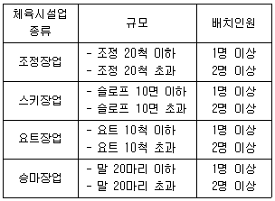
- 조정장업
- 스키장업
- 요트장업
- 승마장업
(정답률: 44%)
79. 스포츠시설 위탁 경영의 장점과 가장 거리가 먼 것은?
- 사고발생 시 책임소재가 명확하다.
- 전문가의 노하우를 활용하여 운영될 수 있다.
- 인건비, 유지관리비 등 비용절감이 가능하다.
- 공휴일에 운영하는 등 개장시간의 탄력적인 운영이 가능하다.
(정답률: 47%)
80. 스포츠 시설의 고객유지를 위한 CRM의 특징에 관한 설명으로 틀린 것은?
- 소비자의 특화된 욕구에 대한 마케팅이다.
- 다품종 소량생산 개념의 생산방식을 지향한다.
- 불특정 고객집단을 목표로 한 마케팅 활동이다.
- 소비자에 대한 상세한 데이터베이스가 구축되어야 한다.
(정답률: 56%)
81. 새로운 종합체육 스포츠시설을 설립하기 위해 부지 선정 시 고려하여야 하는 요소와 가장 거리가 먼 것은?
- 사용용도
- 해당 부지의 개발 관련 법률 사항
- 해당 부지 주변의 미래 개발 관련 계획
- 개발 허가 기관과의 인적 관계성
(정답률: 54%)
82. 체육시설의 설치ㆍ이용에 관한 법령상 4륜 자동차경주장업의 시설기준으로 틀린 것은?
- 트랙은 길이 2킬로미터 이상으로서 출발지점과 도착지점이 연결되는 순환형태여야 한다.
- 트랙의 폭은 11미터 이상 15미터 이하이어야 한다.
- 출발지점에서 첫 번쨰 곡선 부분 시작지점까지는 250미터 이상의 직선구간이어야 한다.
- 트랙의 바닥면은 반드시 포장이어야 한다.
(정답률: 59%)
83. 체육시설의 설치ㆍ이용에 관한 법령상 회원모집에 관한 설명이다. ( )안에 들어갈 숫자가 옳은 것은?
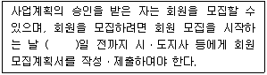
- 7
- 10
- 15
- 30
(정답률: 34%)
84. 경기장 내 A보드 광고에 대한 설명으로 틀린 것은?
- 경기장 입장관객뿐만 아니라 TV중계 시청자에게 광고효과를 기대할 수 있다.
- 경기장 외측 면을 따라 설치되는 것이 일반적이다.
- 광고효과 제고를 위해 LED 등을 활용하기도 한다.
- 설치위치에 따른 광고비용의 차이가 없는 장점을 가진다.
(정답률: 63%)
85. 다음에서 설명하는 사업 운영 모델은?
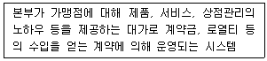
- 체인클럽
- 프랜차이저
- 멀티플클럽
- 독립클럽
(정답률: 63%)
86. 다음 중 농촌지역 스포츠시설 설치를 위한 고려사항과 가장 거리가 먼 것은?
- 노동시간과 여가시간이 구분되어 있지 않다.
- 소득이 낮아 경제적 안정성이 낮다.
- 청년층의 도시진출로 활기를 잃고 있다.
- 육체적 노동이 많아서 스포츠 활동에 호응도가 높은 편이다.
(정답률: 59%)
87. 다음 ( )에 알맞은 것은?
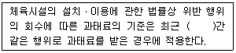
- 6개월
- 1년
- 1년 6개월
- 3년
(정답률: 34%)
88. 관람스포츠 시설을 활용한 관람형 스포츠 이벤트에 대한 설명과 가장 거리가 먼 것은?
- 간접적인 관전 방식이 우선된다.
- 기업 이익의 사회 환원, 이미지 향상, 판매촉진 등을 목적으로 매스미디어를 이용하여 대중에게 관전의 즐거움을 제공한다.
- 관람형 스포츠이벤트는 ‘직접관전’과 ‘간접관전’으로 구분될 수 있다.
- ‘간접관전’보다는 ‘직접관전’의 경우가 그 규모나 효과면에서 훨씬 크다.
(정답률: 55%)
89. 지역특성별 스포츠시설 설치 시 고려해야 할 사항이 아닌 것은?
- 지역특성에 적합한 운동종목 선택
- 이용고객 예측에 따른 규모의 설정
- 고정적인 가격정책으로 이용자의 신뢰 확보
- 소비자의 이용시간대 및 선호 프로그램 조사
(정답률: 62%)
90. 체육시설의 설치ㆍ이용에 관한 법령상 등록 체육시설업에 해당되는 것은?
- 스키장업
- 수영장업
- 당구장업
- 골프연습장업
(정답률: 42%)
91. 체육시설의 설치ㆍ이용에 관한 법령상 체육시설업의 신고에 관한 설명으로 틀린 것은?
- 가상체험 체육시설업을 하려는 자는 시설을 갖추어 특별자치시장ㆍ특별자치도지사ㆍ시장ㆍ군수 또는 구청정에게 신고하여야 한다.
- 특별자치시장ㆍ특별자치도지사ㆍ시장ㆍ군수 또는 구청장은 신고를 받은 경우에는 신고를 받은 날부터 7일 이내에 신고수리 여부를 신고인에게 통지하여야 한다.
- 체육시설업의 변경신고를 할 때에는 변경내용을 증명할 수 있는 서류만을 첨부한다.
- 특별자치시장ㆍ특별자치도지사ㆍ시장ㆍ군수 또는 구청장이 정한 기간 내에 신고수리 여부를 신고인에게 통지하지 아니하면 그 기간이 끝날 날에 신고를 수리한 것으로 본다.
(정답률: 30%)
92. 스포츠시설에서 기존고객 유지를 통한 기대효과가 아닌 것은?
- 시설에 대한 전반적인 관리보수 비용이 적게 든다.
- 신규고객 유치를 위한 광고 및 홍보비를 절감할 수 있다.
- 새로운 이벤트 개발 등 스포츠시설 이용 매력도 향상에 꾸준한 역량을 투입할 수 있다.
- 매출액의 지속적인 유지 및 증가를 기대할 수 있다.
(정답률: 51%)
93. 다음 중 가중치 이용법으로 평가했을 때 가장 적합한 스포츠센터 시설의 입지는?
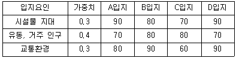
- A입지
- B입지
- C입지
- D입지
(정답률: 49%)
94. 체육시설의 설치ㆍ이용에 관한 법령상 직장체육시설에 관한 설명으로 틀린 것은?
- 원칙적으로 직장체육시설을 설치ㆍ운영하여야 하는 직장은 상시 근무하는 직장인이 500명 이상인 직장으로 한다.
- 「고등교육법」에 따른 학교는 직장체육시설의 전부 또는 일부를 설치ㆍ운영하지 아니할 수 있다.
- 직장체육시설의 설치ㆍ운영에 관하여는 시장ㆍ군수ㆍ구청장이 지도ㆍ감독한다.
- 군부대 직장체육시설의 설치ㆍ운영에 관하여는 국방부장관이 지도ㆍ감독한다.
(정답률: 42%)
95. 체육시설의 설치ㆍ이용에 관한 법령상 체육시설업자가 경미한 사항을 거짓으로 등록한 경우 행정처분기준으로 옳은 것은? (단, 1차 위반인 경우이며 감경사유는 고려하지 않음)
- 경고
- 등록취소
- 영업정지 10일
- 영업정지 1개월
(정답률: 56%)
96. 스포츠시설의 고객관리에 대한 설명으로 틀린 것은?
- 다양한 고객의 욕구를 파악하고 경영에 반영해야 한다.
- 기존고객의 유지보다 신규고객 유치를 통한 확장을 시도해야 한다.
- 고객관계강화를 위해서 데이터베이스를 활용한다.
- 기존고객의 유지→잠재고객의 신규고객 유치→고객만족 단계로 관계발전을 유도한다.
(정답률: 69%)
97. 다음에서 설명하는 것은?
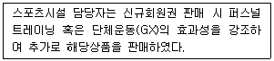
- 릴레이션십 셀링(Relationship Selling)
- 바이럴 마케팅(Viral Marketing)
- 크로스 셀링(Cross Selling)
- 인터널 마케팅(Internal Marketing)
(정답률: 56%)
98. 체육시설의 설치ㆍ이용에 관한 법령상 전문체육시설에 대한 설명으로 틀린 것은?
- 국가와 지방자치단체는 국내ㆍ외 경기대회의 개최와 선수 훈련 등에 필요한 전문체육시설을 설치ㆍ운영하여야 한다.
- 전문체육시설 중 체육관은 체육, 문화 및 청소년 활동 등 필요한 용도로 활용될 수 있도록 설치되어야 한다.
- 지방자치단체는 전문체육시설의 사용 촉진을 위해 사용료의 전부나 일부를 감면할 수 있다.
- 경기대회 개최나 시설의 유지관리에 우선하여 지역주민이 이용할 수 있도록 개방하여야 한다.
(정답률: 38%)
99. 체육시설의 설치ㆍ이용에 관한 법령상 체육시설업의 시설 기준에서 공통기준에 포함되는 필수시설에 대한 설명으로 틀린 것은?
- 자동차경주장업에는 탈의실을 대신하여 세면실을 설치할 수 있다.
- 적정한 환기시설을 갖추어야 한다.
- 무도학원업 체육시설의 조도(照度)는 「산업표준화법」에 따른 조도기준에 맞아야 한다.
- 골프장업에는 응급실을 갖추지 아니할 수 있다.
(정답률: 34%)
100. 체육시설의 설치ㆍ이용에 관한 법령상 스키장업의 안전ㆍ위생기준으로 옳은 것은?
- 스키구조요원은 운영 중인 슬로프별로 1명 이상을 각각 배치하여야 한다.
- 각 리프트의 승ㆍ하차장에는 2명 이상의 승ㆍ하차보조요원을 배치하여야 한다.
- 「의료법」에 따른 간호사 및 「응급의료에 관한 법률」에 따른 응급구조사를 각각 2명 이상 배치하여야 한다.
- 스키장 시설이용에 관한 안전수칙을 이용자가 쉽게 알아볼 수 있도록 셋 이상의 장소에 게시하여야 한다.
(정답률: 34%)